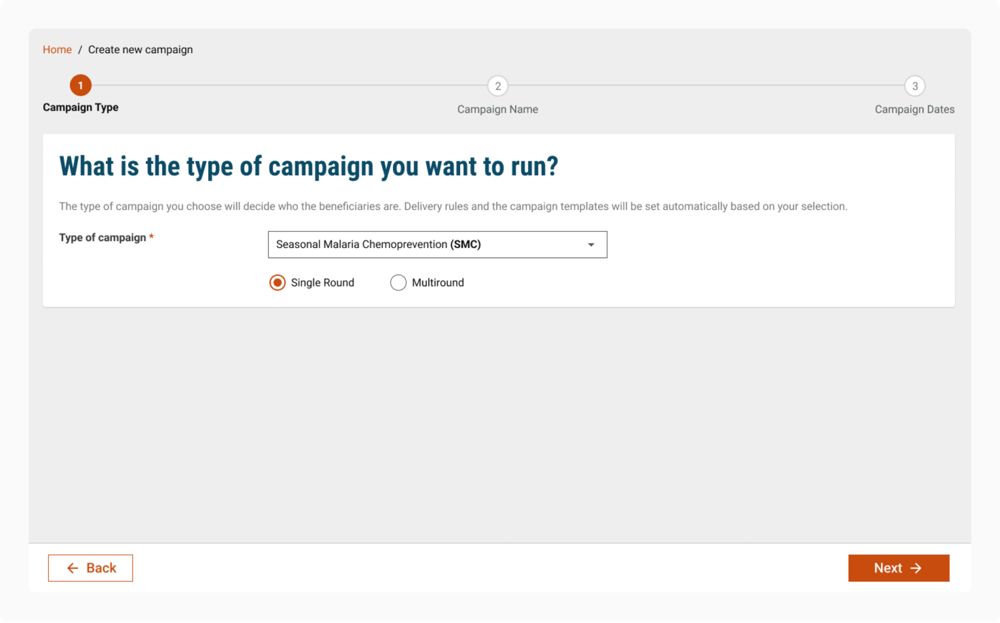
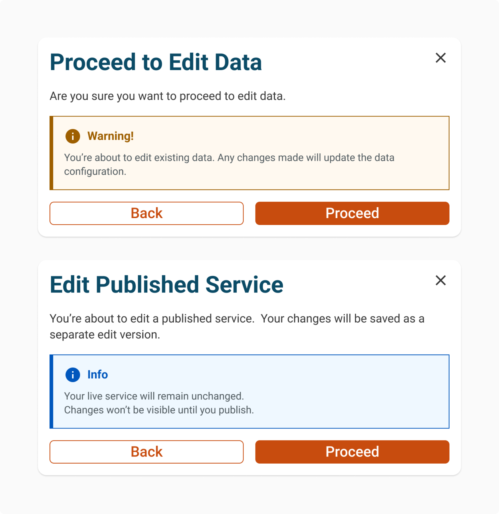
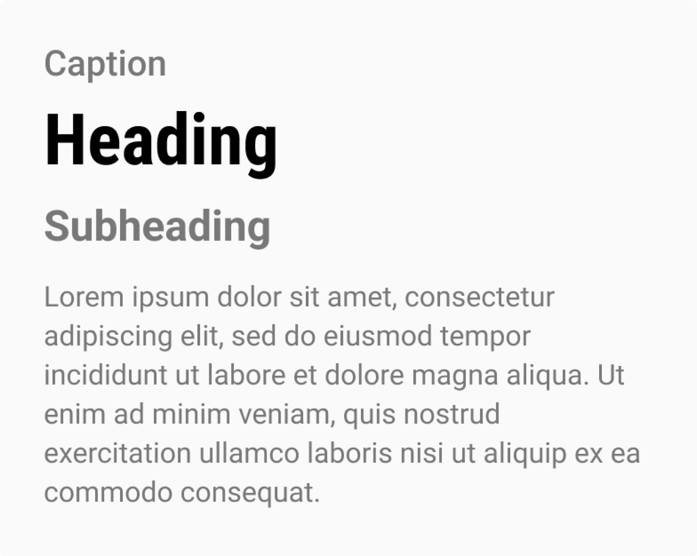
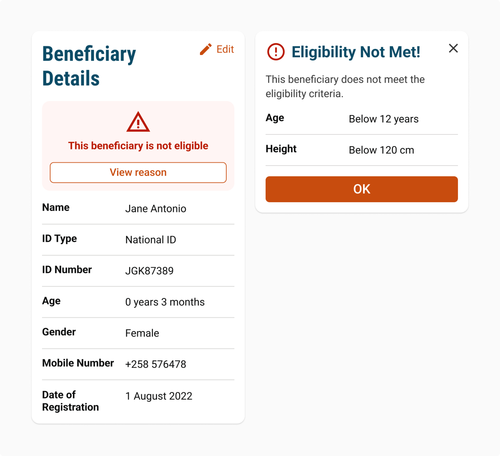

Inclusive Design at DIGIT
Accessibility is a core principle of the DIGIT Design System. We follow WCAG 2.1 AA guidelines to ensure that every interface we build is perceivable, operable, understandable, and robust, serving all users regardless of ability, device, or context.
On this page
Design Principles (What we follow?)

Inclusive design at DIGIT is a foundational principle that shapes how we build digital public infrastructure. It ensures that our systems are usable by everyone, regardless of ability, context, or environment. Designers, engineers, and product teams collaborate to expand perspectives, actively include diverse user needs, and create experiences that are simple, intuitive, and accessible. Inclusion is not treated as a feature but as a core quality of the system.
Explore Design PrinciplesDesign Checkpoints (What we verify?)
All interactive states implemented
Ensure all components include complete interaction coverage such as hover, focus, active, disabled, and keyboard focus states to support consistent user behavior across all input methods.
Responsive design across Mobile, Tablet, Desktop
Design layouts must adapt seamlessly across all breakpoints, ensuring content remains usable, readable, and visually balanced on mobile, tablet, and desktop screens.
Accessible color usage (no color-only meaning)
Do not rely on color alone to communicate information. Always reinforce meaning using labels, icons, structure, or supporting text to ensure accessibility.
Minimum contrast compliance
Maintain WCAG-compliant contrast ratios of at least 4.5:1 for text and 3:1 for UI components to ensure readability across all user conditions.
Defined variants, states, and properties
All components must include clear definitions of variants, states, and properties such as size, style, orientation, selection, and error states for consistent usage.
Full keyboard navigation support
Ensure all interactive flows are fully navigable using keyboard-only input, with logical tab order, visible focus states, and no interaction dead-ends.
Screen reader compatibility
All content, including headings, labels, and controls, must be fully accessible to screen readers with meaningful structure and semantic clarity.
Clear usage guidelines
Provide explicit dos and don'ts for each component or pattern to ensure consistent and correct usage across design and development teams.
Content writing standards
All in-product content must be clear, concise, contextual, and consistent, ensuring readability and accessibility for diverse user groups.
Proper spacing, touch targets, and interaction zones
Ensure adequate spacing between elements and minimum touch target sizes to reduce errors and improve usability, especially on touch devices.
Inclusive Design in Practice (How it is applied?)
Clear, Predictable Structure
Design interfaces so they can be followed in a single, logical flow. Forms, lists, and panels should behave consistently, with a tab order that reflects how users naturally complete tasks. Avoid unexpected focus shifts or hidden navigation paths.

Meaningful Use of Color
Use color to support meaning, not define it. Any information conveyed through color must also be available through labels, icons, structure, or text. Maintain sufficient contrast across all states to ensure readability in all conditions.

Accessible Text Alternatives
Provide meaningful text alternatives for all non-text content. Use clear labels for every control, descriptive alt text for informative images, and ARIA attributes only where native HTML is not sufficient. Ensure screen reader experiences remain complete and coherent.

Readable and Flexible Typography
Use typography to guide attention with clear hierarchy and consistent spacing. Maintain readable line lengths and avoid fully justified text. Ensure layouts respect user preferences such as zoom, scaling, theme changes, and contrast adjustments.

Preventing and Handling Errors
Design systems to reduce errors through clarity and structure. When errors occur, they should appear close to the relevant field and clearly explain what went wrong. Messages must be specific, actionable, and easy to recover from, without disrupting overall comprehension.
